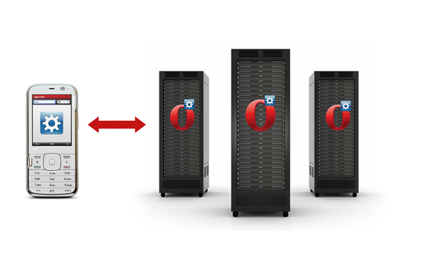
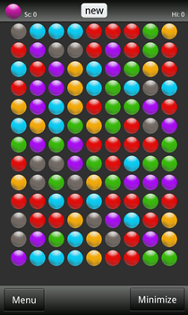
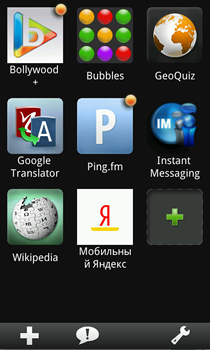
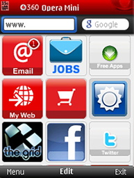
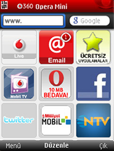
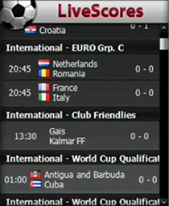

How are Opera Mini widgets different?
Note: the ability to run Opera Mini widgets on your phone is a B2B product delivered only to Vodafone at this time.
Introduction
This article details the key differences between Opera Mobile and Opera Mini Widgets.
Overall architecture
Opera Mobile widgets run in the same manner as Widgets on Opera desktop - the full widget runtime resides on the device, and the widgets runs of top of it.
Mini is a bit different - see Figure 1. The lightweight Opera Mini client is installed on the client. When you want to run a widget, requests are sent from the device to the Opera Widgets server. The server performs updates to the Widget and transcodes the output. This output is sent back to the client.

Figure 1: Opera Mini widget architecture.
Supported operating systems
Opera Mobile can run widgets on Windows Mobile, Android and Symbian. Opera Mini widgets, on the other hand, can run on any operating systems based on Java or Brew.
Widgets environment
| Opera Mobile Widgets | Opera Mini Widgets | |
|---|---|---|
| Client type | Full widget runtime client | Thin client |
| Server connection | n/a | HTTP and socket supported |
| Widgets specification supported | W3C Widgets | W3C Widgets |
| Widgets execution environment | Local | Server-side, on a Widgets server |
| Available SDKs | Widgets SDK | Widgets SDK |
| Running multiple widgets simultaneously | Supported only if multiprocessing is supported by the device | Supported on the Widgets server |
| Device API integration | Supported on client | Supported on Widgets server |
| JIL | Supported on client | Limited JIL support on Opera Mini, which is further limited by the JSRs supported by the device. Also, JIL is only supported on Socket connections. |
Functional differences
| Opera Mobile Widgets | Opera Mini Widgets | |
|---|---|---|
| Execution flow | Execution and rendering of Widgets is done locally on the client device. | Execution is routed to a Widgets server that maintains a widget session per user. The server enders updates to Widgets, then transcodes them and sends them to the client. |
| Technology support | Local support for HTML, CSS, SVG, JavaScript, DOM, HTML5 Forms and other web standards. | Local support for OBML. Server-side support for HTML, CSS, JavaScript, DOM and other web standards, which is then transcoded into OBML and sent to the client. As such, the CSS rendering has limitations, for example no support for CSS transitions, border radius and other processor intensive CSS. JavaScript support is also limited, as the execution is on the server: instant updates to the DOM will not work, for example. |
| Widget updates on client | Widgets are continuously running; updates are instant. | Widgets are executed on the server only when the client requests updates.
updates are supported in socket connections – every update in the widget is sent automatically by the widget server. For HTTP-based connections, the widget is not running continuously on the server, but in iterations lasting a couple of minutes or so, depending on how the user reloads the pages. Whenever the user reloads the page, the widget is kick-started (if it is sleeping). It will send its updates to the client and, if no other updates are requested within a couple of minutes, it will go back to sleep. |
| State storage | Done locally by JavaScript | Done by JavaScript on the widget server. As an example, a currency converter, feed reader, or Facebook/Twitter-based widgets can store user-specific details between consecutive connections. |
| Animations | Supported | Smooth animations are not supported at all. Animations with slower updates will require a lot of network traffic, and updates to the widget will be dependent on network speeds. |
| Good for games? | Yes | Not for fancy games, but state-based games will work very well, for example tic-tac-toe, chess, etc. |
| Examples | Any W3C widget | Widgets that are portals to other services work very well, for example weather, calculator, currency converter, stocks, feed reader, etc. |
| Live icons | Supported | Supported |
Opera Mobile widgets examples

Opera Mini widgets examples

This article is licensed under a Creative Commons Attribution-Noncommercial-Share Alike 3.0 Unported license.
Comments
The forum archive of this article is still available on My Opera.
-

I can only imagine the large amount of time and patients envolved in the apps ,wigets, add-ons ,extension , java scripting and etc,. I f also find it just as alarming to see how shaddy the market has become. I understand that nothings for free in some cases and I respect that. I think its sad when people devalutize other people property. take for example these apps. So the question I pose to you is " Where does this stop?
-

@cooleythug22 I really don't understand what you are saying. We developed the widgets technology, and these app examples were created in conjunction with the original creators...?
No new comments accepted.ALFRED DUNBAR
Friday, February 3, 2012
Chris Mills
Saturday, February 4, 2012